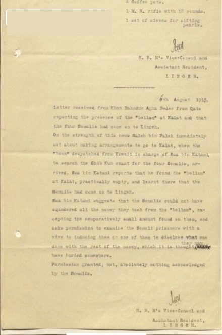

في عام ١٩١٣ قُتل تاجر اللؤلؤ الكويتي سيف بن سيف الرومي في البحر واتُّهم أربعة رجال صوماليون. ويروي عيسى، المذكور هنا باسم عيسى ابن قطامي، وعمره ٤٠ عاما، من أهل الكويت، أنه أُرسل نوخذة على بوم شملان للبحث عن الرجال في الموانئ الصغيرة. أبحر في ٢٦ شعبان (٣٠ يوليو ١٩١٣)، وتتبع أثرهم إلى كلات حيث وجد البلم المتروك، ثم ذهب إلى لنجة وقد قُبض على الأربعة. فسألهم فأنكروا معرفتهم بالكويت. وكتب عنه نائب القنصل البريطاني في لنجة في يومياته أيضا. ففي ٦ أغسطس ١٩١٣ ذكر أن بوما أُرسل من الكويت «بقيادة عيسى بن قطامي» للبحث عن الصوماليين الأربعة على الساحل المقابل، وأن عيسى وجد البلم المسروق في كلات شبه فارغ، وطلب أن يستجوب الأسرى الصوماليين عن بقية المال. وفي ٧ أغسطس كتب: «غادر عيسى بن قطامي إلى الكويت اليوم».
أهميتها
هي كلمات عيسى نفسه، نوخذة يُؤتمن على مهمة البحث، وتُظهر معرفته الدقيقة بالموانئ الصغيرة على الساحل الشرقي للخليج العربي.
من المقصود
تذكر الجريدة أن هذا الشاهد هو النوخذة عيسى بن قطامي، الملاح والمؤلف، وهو عيسى بن عبدالوهاب القطامي في شجرة العائلة.
صور الصفحات
الإفادة سنة ١٩١٣ كما نشرها بسام اللوغاني

يوميات نائب القنصل البريطاني في لنجة، ٦ أغسطس ١٩١٣: البوم المرسل من الكويت «بقيادة عيسى بن قطامي»اليوميات نفسها، ٧ أغسطس ١٩١٣: «غادر عيسى بن قطامي إلى الكويت اليوم»
النص الأصلي
Prosecution Witness No. 3
Name: Isa
Son of: Gatani
Aged: 40 years
Residing at: Kuwait
Religion: Sunni Mahomedan
Having been solemnly affirmed, and in the presence of the accused, STATES:
I do not know the accused by sight but I heard of the murder of Saif when the news came to Kuwait and I was sent to navigate Shamlan's boom to look for them among the small ports. I started on the 26th Shaaban (30th July 1913) and the wind being "shamal" I made a good passage to Daiyir and made enquiries there but got no news; I then sailed on to Bruck (?) but got no news there so went on to Chiru where the people told me that four Somalis had arrived there from Kalat where they said they had left their boat. On this I went to Kalat and found the bellum there. I arrived at Kalat on the 30th Shaaban and was told that the 4 Somalis had arrived on the 23rd Shaaban 7 days before in a small boat, not in the bellum. The Sheikh of the place told me in reply to my enquiries that the story of the four Somalis who landed was that they had originally had 8 men in the bellum and were coming from Somaliland to Bahrain but the boat had been swamped by the "Shamal" and four of the eight had been drowned. The remaining four accused arrived at Kalat in the small dinghy of the bellum with this story having left the bellum awash in the sea. The sheikh of the place seeing them destitute helped them with food and water and they went on … towards Lingah. Some divers of Kalat on their way back from the pearl-banks saw the bellam and towed it in. Hearing no more I went on to make further enquiries at Lingah. The four accused had been caught and imprisoned by the time I arrived but I asked them questions in order to find out whether they would say where they had hidden the money etc. They denied all knowledge saying that they knew nothing of Kuwait or anything connected with it.
ملاحظات
الإفادة مطبوعة وعليها تصحيحات بخط اليد، والنص أعلاه بعد التصحيح. وأسماء الأماكن كما وردت. ونشر باسم اللوغاني هذه الصفحة في زاوية «وثيقة لها تاريخ» بجريدة الجريدة في ٢ نوفمبر ٢٠١٨، ضمن المقال السادس من سلسلته عن مقتل سيف بن سيف الرومي، مع ملخص عربي.
أسماء أخرى
سيف بن سيف الروميشملان بن علي بن سيف
المصادر
نسخة نشرها باسم اللوغاني في جريدة الجريدة الكويتية، ٢ نوفمبر ٢٠١٨. ونسخة محفوظة في درايف العائلة.
مرجع الأرشيف
Al-Jarida, 2 November 2018 · وثيقة لها تاريخ: النوخذة عيسى بن قطامي يدلي بشهادته بخصوص حادثة سيف بن سيف
كيف كُتب هذا النص: نسخه Claude من الصورة مع التصحيحات المكتوبة باليد. نشرت الجريدة ملخصا عربيا فقط لا نصا كاملا. الترجمة العربية من Claude، يرجى مراجعتها.